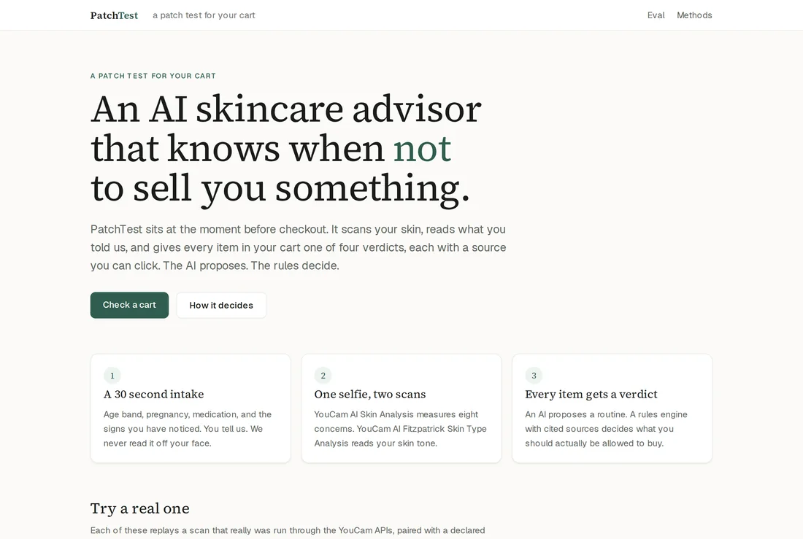

Pediatrics, 2025
Only 26% include sunscreen.

A patch test for your cart.
Web app, and a browser extension for everyone else’s shop.
Built with the YouCam AI Skin Analysis API and the YouCam AI Fitzpatrick Skin Type Analysis API.
patchtest.fly.dev
Every face and product image shown is AI generated. “Lumen & Leaf” and “Verdant Row” are fictional stores. Not a medical device.